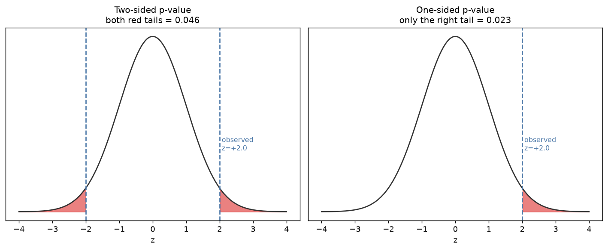
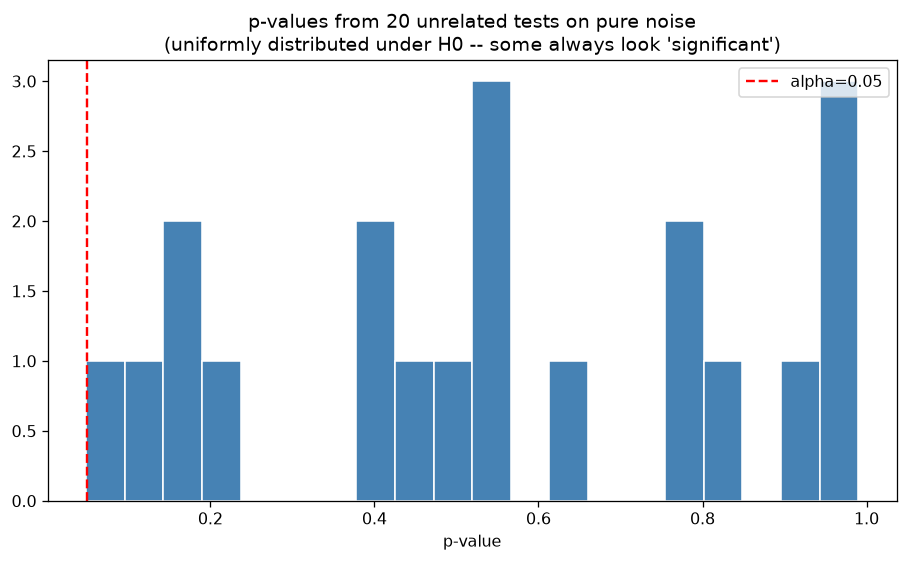

Chapter 12: Hypothesis Testing and p-values
The idea this chapter builds toward
Hypothesis testing answers: "Is the pattern I'm seeing in my sample likely to be real, or could it plausibly just be random noise?" It's structured as a kind of mathematical "innocent until proven guilty" argument, and the p-value is the precise number that quantifies how surprising your data would be if nothing interesting were actually going on. This machinery underlies A/B testing, "statistically significant" claims in papers, and, as we'll connect at the end, the entire logic of comparing whether one ML model is actually better than another or just got lucky on this particular test set.
Intuition, in one breath: Start by assuming nothing interesting is happening, then ask how weird your data would look under that boring assumption. If the data would be very weird, you start doubting the boring assumption; if it's ordinary, you don't. That's the whole test.
The structure of a hypothesis test - innocent until proven guilty
- Null hypothesis ($H_0$): the "boring," default, skeptical claim - usually "no effect," "no difference," "nothing interesting is happening." Example: "this new website design does not change the conversion rate."
- Alternative hypothesis ($H_1$ or $H_a$): what you actually suspect/hope is true - "there IS an effect." Example: "the new design changes the conversion rate."
- You collect data and compute a test statistic - a single number summarizing how far your observed data is from what $H_0$ predicts, measured in standard-error units (exactly the z-score idea from Chapter 6, and the same mechanics as Chapter 11's confidence interval).
- You compute a p-value: assuming $H_0$ is true, what's the probability of seeing a test statistic at least this extreme, purely by chance?
- You compare the p-value to a pre-chosen threshold, $\alpha$ (commonly 0.05), and decide: if $p < \alpha$, you reject $H_0$ ("statistically significant" result - reject the "boring" default in favor of your suspicion). If $p \ge \alpha$, you fail to reject $H_0$ (not enough evidence against the boring default - crucially, this is not the same as "proving $H_0$ is true," only that your data didn't clear the bar to overturn it).
What a p-value actually is (and the misconception to avoid)
Correct definition: the p-value is $P(\text{data this extreme or more extreme} \mid H_0 \text{ is true})$.
Common incorrect interpretation: "the p-value is the probability that $H_0$ is true" - this is backwards, and is exactly the same $P(E\mid H)$ vs. $P(H\mid E)$ confusion from Chapter 4's Bayes' Theorem. The p-value conditions on $H_0$ being true and asks about the data; it says nothing directly about $P(H_0 \mid \text{data})$ - that would require Bayes' Theorem and a prior (Chapter 4, and formalized properly in Chapter 17). A small p-value means "this data would be quite surprising if $H_0$ were true" - strong evidence against $H_0$, but not a direct probability that $H_0$ is false.
Worked example - by hand
A website's historical conversion rate is known to be 10% ($H_0$: true rate = 0.10). You test a redesign on $n=400$ visitors and observe 52 conversions (13%). Is this good evidence the redesign genuinely improved conversions, or could 52/400 plausibly happen by chance even if the true rate is still 10%?
Under $H_0$, the number of conversions out of 400 follows (approximately, via CLT) a Normal distribution for the sample proportion $\hat p$, with mean $p_0 = 0.10$ and standard error:
$$SE = \sqrt{\frac{p_0(1-p_0)}{n}} = \sqrt{\frac{0.10 \times 0.90}{400}} = \sqrt{0.000225} = 0.015$$
Test statistic (z-score of the observed proportion under $H_0$):
$$z = \frac{\hat p - p_0}{SE} = \frac{0.13 - 0.10}{0.015} = \frac{0.03}{0.015} = 2.0$$
The observed conversion rate is 2 standard errors above what $H_0$ predicts. Using the Standard Normal distribution, $P(Z \ge 2.0) \approx 0.0228$. For a two-sided test (we'd be equally interested if the rate had dropped by this much), double it: $p\text{-value} \approx 0.0456$.
With $\alpha = 0.05$: since $0.0456 < 0.05$, we reject $H_0$ - there's statistically significant evidence of improvement. (Note how close this is to the threshold - a genuinely borderline result, which is itself a useful lesson: real-world "statistically significant" results are very often this close to the line, not overwhelming slam dunks, which is exactly why p-hacking - explained below - is such an easy trap.)

The p-value is literally a shaded area under the curve - nothing more. Left: for a two-sided test, you shade BOTH tails beyond $|z|=2.0$ (because you'd be equally surprised by a 2-standard-error move in either direction), giving the $p\approx0.046$ computed above. Right: a one-sided test only shades the single tail you actually care about, which is why the exact same observed z-score produces a smaller p-value ($\approx0.023$) - it's answering a narrower, more committed question, which is precisely why you must pick a side before looking at the data, not after.
One-sided vs. two-sided tests
A two-sided test asks "is the true value different (either direction)?" - used above. A one-sided test asks "is the true value specifically higher (or specifically lower)?" - only valid when you committed to that direction before seeing the data (deciding the direction after peeking at results, to get a smaller p-value, is a form of p-hacking - see below). One-sided tests use the un-doubled tail probability, so for the same raw z-score, a one-sided p-value is half the two-sided one - meaning it's "easier" to hit significance, which is exactly why you must commit to the direction in advance, not opportunistically.
Type I and Type II errors - the two ways a test can be wrong
| $H_0$ actually true | $H_0$ actually false | |
|---|---|---|
| You reject $H_0$ | Type I error (false positive), probability = $\alpha$ | Correct decision (true positive) |
| You fail to reject $H_0$ | Correct decision (true negative) | Type II error (false negative), probability = $\beta$ |
$\alpha$ (your significance threshold, e.g. 0.05) is exactly your Type I error rate by construction - it's the rate at which you'll falsely cry "effect!" when there isn't one, if you ran this exact test procedure over and over on data where $H_0$ was actually true. Statistical power is $1-\beta$: the probability of correctly detecting a real effect when one truly exists. Power depends on sample size, effect size, and $\alpha$ - bigger samples and bigger true effects are easier to detect (higher power), and this exact tradeoff is why underpowered A/B tests (too few users) routinely fail to detect real, meaningful improvements. This table should feel structurally familiar: it is the exact same 2×2 "confusion matrix" logic used to evaluate a binary classifier's false positives/false negatives in ML, just with different column labels.
Reconstructing it yourself - actually computing statistical power, not just naming it
"Power depends on sample size and effect size" is a claim worth proving with real numbers rather than taking on faith. If your intuition is that power is just "the mirror image of the rejection region, but centered on the truth instead of on $H_0$" - that intuition is exactly the right mental picture; let's compute it.
Recall the conversion-rate worked example: $H_0$: true rate $=0.10$, and with $n=400$ we rejected $H_0$ at $\hat p=0.13$. Now ask a forward-looking question: if the redesign's true rate really is $0.13$ (not just observed, but truly), what's the probability this exact test correctly detects it (i.e., what is the power)? You need two things layered on the same axis: (1) the rejection threshold computed under $H_0$, and (2) the sampling distribution of $\hat p$ computed under the true alternative rate instead.
Under $H_0$ with $SE=0.015$ (from the original worked example) and a two-sided $\alpha=0.05$ test, you reject whenever $\hat p$ falls outside $0.10 \pm 1.96(0.015) = [0.0706, 0.1294]$ - so specifically, you reject on the high side whenever $\hat p > 0.1294$. Now switch the lens: if the true rate is actually $0.13$, $\hat p$'s own sampling distribution (still governed by the same CLT machinery) is centered at $N(0.13, 0.015^2)$ - a different bell curve, shifted to be centered on the truth rather than on $H_0$. Power is the area of that shifted curve that still lands in the rejection region:
$$\text{Power} = P\left(\hat p > 0.1294 \;\middle|\; \text{true } p = 0.13\right) = P\left(Z > \frac{0.1294-0.13}{0.015}\right) = P(Z > -0.04) \approx 0.516$$
Only about 52% power - despite the test correctly rejecting $H_0$ in the one sample you actually drew, if the true improvement really were exactly this size, you'd expect this exact experiment design to catch it only about half the time across repeated runs; the other half, pure sampling luck would land $\hat p$ back inside the "fail to reject" zone even though the effect is real. This is the single most important practical lesson "power" ever teaches: a statistically significant result from one specific run does not mean your experiment was well-powered - you can get lucky with an underpowered test, exactly as happened here, which is why serious experimental design computes power (or the required $n$ for a target power, by running this same calculation backwards) before collecting data, not after.
The backstory - a fight between two frameworks that got mashed together
What you learned above is actually a hybrid of two different, historically rival frameworks, and knowing this explains a lot of the lingering confusion around p-values today.
Ronald Fisher (1920s-30s) proposed "significance testing": compute a p-value as a continuous measure of evidence against a single null hypothesis, and use it as a flexible, informal guide for judgment - he explicitly did not want a rigid, mechanical accept/reject cutoff, and treated $p<0.05$ merely as a loose conventional benchmark for "worth another look," not an automatic verdict. Fisher's framework has no explicit alternative hypothesis and no formal concept of Type II error or power - it only ever asks "how surprising is this data under $H_0$?"
Jerzy Neyman and Egon Pearson (early 1930s), reacting against what they saw as Fisher's philosophical looseness, built a competing framework: "hypothesis testing" with an explicit null and alternative hypothesis, a pre-committed decision rule (reject or don't, based on a pre-chosen $\alpha$), and the formal machinery of Type I/Type II errors and power that lets you design an experiment in advance to guarantee controlled error rates - treating the whole exercise as a repeated, mechanical decision procedure (deliberately analogous to industrial quality-control acceptance sampling, which is literally the context Egon Pearson was consulting on).
Fisher and Neyman clashed over this publicly and bitterly for decades (Fisher at one point accused Neyman's approach of reducing science to "a mechanical rule… like a Russian five-year plan"). What gets taught in most intro courses today - and what you learned above - is an informal fusion of the two: Fisher's continuous p-value computed, but interpreted against Neyman-Pearson's pre-chosen fixed $\alpha$ threshold and formal Type I/II error framework. This hybrid is mathematically workable but was never endorsed as a coherent philosophy by either original camp - which is worth knowing simply so that when a p-value feels like it's being asked to do two subtly different jobs at once (a continuous evidence measure, and a binary accept/reject switch), that's not you misunderstanding it; that tension is baked into the hybrid's own history.
The multiple-comparisons / p-hacking trap
If you run 20 independent hypothesis tests, each with $\alpha=0.05$, and $H_0$ is actually true for all 20, you'd expect about 1 of them to show "significance" purely by chance (that's what $\alpha=0.05$ means - a 1-in-20 false-alarm rate per test). If you test 20 unrelated things and report only the one that came out significant, you've badly misrepresented your evidence - this is called p-hacking (or the multiple comparisons problem), and it's one of the most common ways legitimate-looking statistics in papers and dashboards goes quietly wrong. Corrections exist (e.g., Bonferroni correction: divide $\alpha$ by the number of tests performed) specifically to guard against this inflation of false positives.
Why this matters directly for ML model comparison
"Model B gets 92% accuracy, Model A gets 91%, so B is better" is exactly a hypothesis-testing question in disguise: $H_0$ = "the two models have the same true accuracy, and this 1% gap is just test-set sampling noise." Without running the equivalent of this chapter's test (comparing the gap to its standard error, given test-set size), you cannot tell whether that 1% is a real improvement or noise - this is precisely why rigorous ML benchmarking reports significance or confidence intervals around accuracy differences, not just bare point estimates, and why a 1% gap on a 100-example test set should earn far less trust than the same 1% gap on a 50,000-example test set.
More real-world examples of hypothesis testing
- Drug trials: $H_0$ = "the new drug has no effect beyond placebo." Regulatory agencies (FDA, EMA) require pre-registered trials specifically to prevent p-hacking - the analysis plan (including which test, which $\alpha$, one-sided or two-sided) must be fixed before seeing the data, for exactly the reasons above.
- Website A/B testing: $H_0$ = "button color doesn't affect click-through rate." Companies routinely run dozens of simultaneous experiments across a product - without multiple-comparison correction, a meaningful fraction of "winning" experiments reported in a given quarter are expected to be pure noise, which is why mature experimentation platforms apply corrections or use False Discovery Rate control instead of raw per-test $\alpha=0.05$.
- Manufacturing quality control: $H_0$ = "this production batch meets the specified tolerance." A factory might sample and test each batch, accepting the Type I error rate (rejecting a genuinely fine batch) as a known, budgeted cost of doing business, traded off against Type II error (shipping a genuinely defective batch) - literally the Neyman-Pearson decision-procedure framing applied directly.
- Scientific replication crisis: a large fraction of widely-publicized psychology and biomedical findings from the 2000s-2010s failed to replicate when independently retested - a crisis substantially attributed to exactly the p-hacking and multiple-comparisons issues described above (combined with "publication bias," where only significant-looking results get published in the first place, further inflating the apparent rate of real effects in the literature).
Figures

p-values from 20 completely unrelated hypothesis tests run on pure noise (the null hypothesis is true for every single one). Notice p-values are uniformly distributed -- some will always look 'significant' by chance alone.
Run it yourself
book/code/ch12_hypothesis_testing.py reproduces the conversion-rate worked example with both the hand-formula z-test and scipy's built-in proportion test, then runs a Type-I-error demonstration: simulate 1000 independent "experiments" where $H_0$ is deliberately true by construction, run a hypothesis test on each, and count how often you falsely reject $H_0$ - confirming it lands close to your chosen $\alpha$, and finally demonstrates the p-hacking trap by running 20 unrelated tests on pure noise and showing how often at least one comes out "significant" by chance alone.
python book/code/ch12_hypothesis_testing.py
Why This Matters - In AI and In Everyday Life
In AI / machine learning:
- Deciding whether Model B actually beats Model A: comparing a 1% accuracy gap between two models is exactly a hypothesis test in disguise -- without it, you can't tell a real improvement from test-set noise.
- Feature/ablation significance in ML research: papers routinely test whether removing a component (an ablation) causes a statistically significant performance drop before claiming the component matters.
- RLHF preference comparison: deciding whether a reward model genuinely prefers one candidate response over another, across a pool of annotator judgments, is a hypothesis test on the win-rate difference - a "significant preference" claim is a p-value statement about annotator-sample noise, not proof of a universal quality ordering.
- Multiple-comparisons control in hyperparameter sweeps: searching hundreds of configurations and picking the one with the best validation score is running hundreds of implicit hypothesis tests on noise, exactly the p-hacking trap - which is why serious sweeps hold out a final test set or apply corrections before declaring a configuration a real winner.
In everyday, non-AI life:
- Website A/B testing: "does changing the button color actually change the click-through rate, or did we just get lucky with this batch of visitors" is the canonical real-world use of this entire chapter.
- Drug trials: regulators require hypothesis tests (with pre-registered alpha and one/two-sided choice) before a new drug can be approved as genuinely effective versus placebo.
Worked example - by hand, larger
The conversion-rate example above used a proportion. Now a continuous-mean test - the shape of question you run when the model's score is a real number, not a success/failure. Suppose a retrieval model's documentation claims an average query latency of $\mu_0 = 250$ ms, and you suspect the deployed version is actually slower because of added reranking. You measure $n = 100$ queries and obtain $\bar x = 255$ ms with sample standard deviation $s = 25$ ms. Is this good evidence the true latency has drifted up from 250 ms?
Because you committed to a direction ("slower") before looking at the data, and the mechanism (added reranking) only plausibly slows it down, a one-sided test is the honest choice here. State the hypotheses:
$$H_0: \mu = 250 \quad \text{vs.} \quad H_1: \mu > 250.$$
Step 1 - standard error. $SE = \frac{s}{\sqrt n} = \frac{25}{\sqrt{100}} = \frac{25}{10} = 2.5$ ms.
Step 2 - test statistic. Same z-score mechanics as Chapter 6 and 11:
$$z = \frac{\bar x - \mu_0}{SE} = \frac{255 - 250}{2.5} = \frac{5}{2.5} = 2.0.$$
Step 3 - p-value. The observed mean is 2 standard errors above the claim. For a one-sided test we shade only the right tail: $P(Z \ge 2.0) \approx 0.0228$. (Note: had you not committed to a direction and used a two-sided test instead, the p-value would double to about 0.0456 - still below 0.05, but noticeably closer to the line, which is exactly why declaring your side in advance matters.)
Step 4 - decide. With $\alpha = 0.05$: $0.0228 < 0.05$, so reject $H_0$. There is statistically significant evidence that the true mean latency exceeds 250 ms. Crucially, the size of the effect is tiny relative to the noise - only 5 ms - so "statistically significant" here means "we're fairly sure there's some increase," not "the increase is large." A significant result and a large result are different questions: significance is about confidence that an effect exists, effect size is about how big it is.
The plain-language takeaway: the same z-score skeleton drives every test in this chapter, and the three things you must nail down before touching the data are the null value, the direction (one- or two-sided), and the significance threshold - get those wrong and the arithmetic, however correct, answers a question you never meant to ask.
Check your understanding
- In your own words, explain why a p-value of 0.03 does NOT mean "there's a 3% chance $H_0$ is true."
- Why does a two-sided test have double the p-value of a one-sided test for the same observed z-score, and why does that make "choosing the side after seeing the data" cheating?
- If you ran 100 totally unrelated hypothesis tests at $\alpha=0.05$ on data where every null hypothesis was actually true, roughly how many would you expect to falsely show "significance," and why?
Exercises
Exercise 1 - One-sample z-test by hand
A monitoring system asserts a service's mean error rate is 3.0%. After a deployment you sample $n = 144$ requests and find a mean error rate of 3.4% with standard deviation 1.8%. Run a two-sided test at $\alpha = 0.05$ and state your conclusion.
Show solution
Standard error: $$SE = \frac{s}{\sqrt n} = \frac{1.8}{\sqrt{144}} = \frac{1.8}{12} = 0.15.$$ Test statistic: $$z = \frac{\bar x - \mu_0}{SE} = \frac{3.4 - 3.0}{0.15} = \frac{0.4}{0.15} \approx 2.667.$$ Two-sided p-value: $2 \times P(Z \ge 2.667) \approx 2 \times 0.00383 \approx 0.0077$. Since $0.0077 < 0.05$, we reject $H_0$. There is statistically significant evidence the mean error rate has changed from 3.0%. (The effect is +0.4 percentage points; whether that is *practically* concerning is a separate, non-statistical judgment.)Exercise 2 - Multiple comparisons correction
An ML team evaluates 40 independent candidate features, testing each at $\alpha = 0.05$ for a relationship with the target. All features are genuinely unrelated to the target. Using the Bonferroni correction, what per-test threshold should they use, and roughly how many spurious "significant" features would they expect to see without the correction?
Show solution
Without correction: each test has a 5% false-positive rate, so over 40 independent tests the expected number of spurious findings is $$40 \times 0.05 = 2.$$ You would expect about 2 features to look "significant" purely by chance. Bonferroni correction divides the family-wise threshold by the number of tests: $$\alpha_{\text{per-test}} = \frac{0.05}{40} = 0.00125.$$ Only a p-value below 0.00125 would now count as significant, which keeps the overall chance of *any* false positive across the whole batch near 5%. This is the p-hacking antidote described in the chapter: the more tests you run, the stricter each one must be.Exercise 3 - Conceptual: significance vs. importance in model comparison
Two models differ by 0.2% accuracy on a test set of 200,000 examples, and the difference comes out significant at $p < 0.001$. A colleague concludes "we must ship the better model." Give the statistically careful response, referencing at least two concepts from this chapter.
Show solution
The response should separate the *statistical* question from the *decision* question: - **Significance is not effect size.** With $n=200{,}000$, even a trivially small difference (0.2%) can be detected as statistically significant, because the standard error of the difference shrinks like $1/\sqrt n$. A tiny p-value tells you the difference is probably *real*, not that it is *large* or *important*. - **Define the null properly.** Here $H_0$ is "the two models have equal true accuracy." Rejecting it says the accuracies are (almost certainly) not exactly equal - not that the gap matters. - **Decisions need a minimum-effect threshold.** A responsible practice is to test not "are they equal?" but "is the gap bigger than some practically meaningful margin?" (an equivalence / non-inferiority style question), plus weighing the cost of deployment, latency, and maintenance. - **Beware aggregation.** A 0.2% overall gain can mask larger regressions on important subgroups - checking per-slice is the fairness/robustness analogue of not trusting an aggregate. So the careful conclusion is: "the difference is statistically real and probably not noise, but its *practical* significance is a separate judgment we haven't made."What's next
Chapter 13 extends this exact testing framework to more specific, very commonly used tests - the t-test (comparing two group means), the chi-square test (comparing categorical frequencies), and ANOVA (comparing more than two group means at once) - all built from the same null-hypothesis-and-p-value skeleton you just learned.